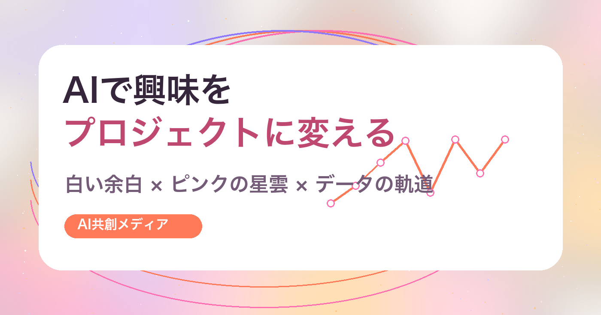

AIセルフプロジェクト
AIで自分の興味を「金融データ分析プロジェクト」に変える方法
Note用に作っていた記事をサイト版として掲載。自分の興味を棚卸しし、金融データ分析を発信・商品化へ変える流れを整理します。
AI × 自分の興味 × 金融データ分析
AIの使い方を覚えるだけではなく、自分の中にある興味・経験・探究心を、他人にも届く形へ翻訳するための実験メディアです。

Concept
このサイトでは、金融市場の売買判断ではなく、データの取得・整形・可視化・AI要約・レポート化の流れを扱います。
同時に、金融データ分析をひとつの実例として、「好きなことをAIと一緒に商品化する方法」を記録していきます。
Blog
AIセルフプロジェクト
Note用に作っていた記事をサイト版として掲載。自分の興味を棚卸しし、金融データ分析を発信・商品化へ変える流れを整理します。
Content Library
AIセルフプロジェクト、商品設計、講座、サービス、金融データ分析教材など、眠っていた30本以上のコンテンツをまとめました。
ライブラリを見るFree Sheet
自分の興味・経験をAIと一緒に整理し、30日以内に始められる小さなプロジェクトを1つ決めるための無料シートです。
無料シートを見るProducts
CSV整理、Python集計、グラフ化、AI要約、レポート化の型を学ぶためのテンプレート集。
自分のテーマを発信、無料配布、有料商品、販売導線まで変換する実践講座。
Profile
AI、Python、金融データ分析、暗号資産、動画制作、自然栽培、古代史リサーチなど、複数の関心を横断しながら、個人プロジェクトを発信・商品化する方法を実験しています。
このサイトは、その制作ログであり、同じように「やりたいことが多い人」のための設計図でもあります。